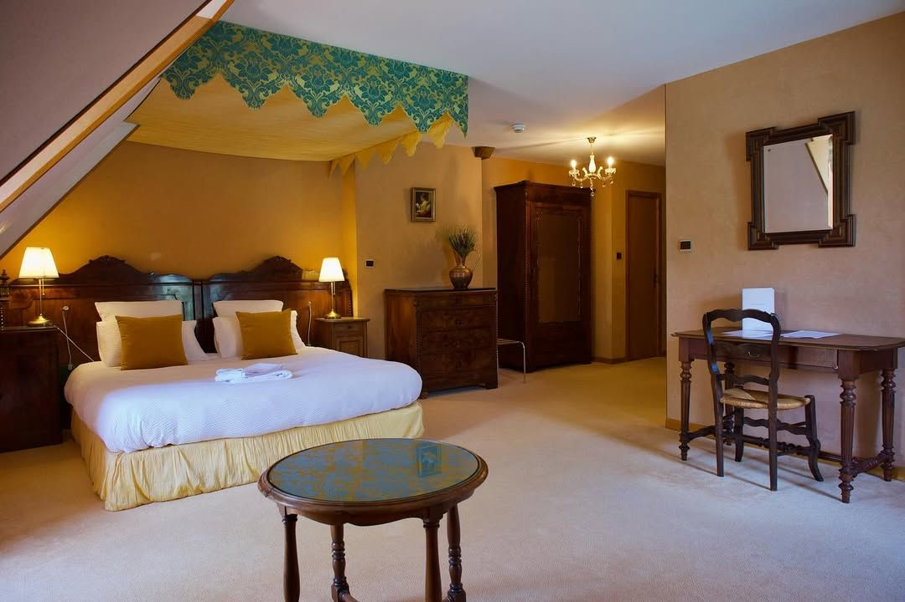
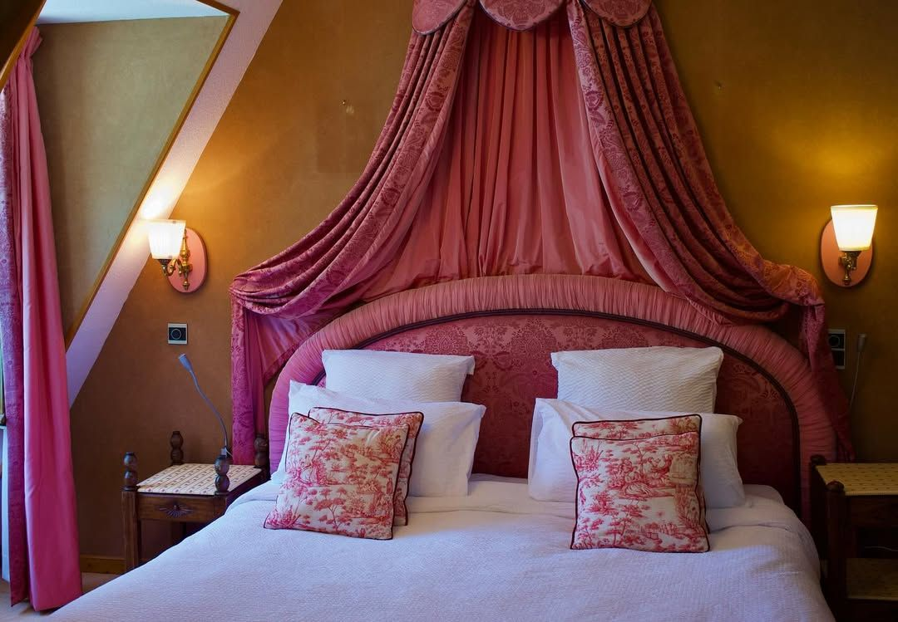
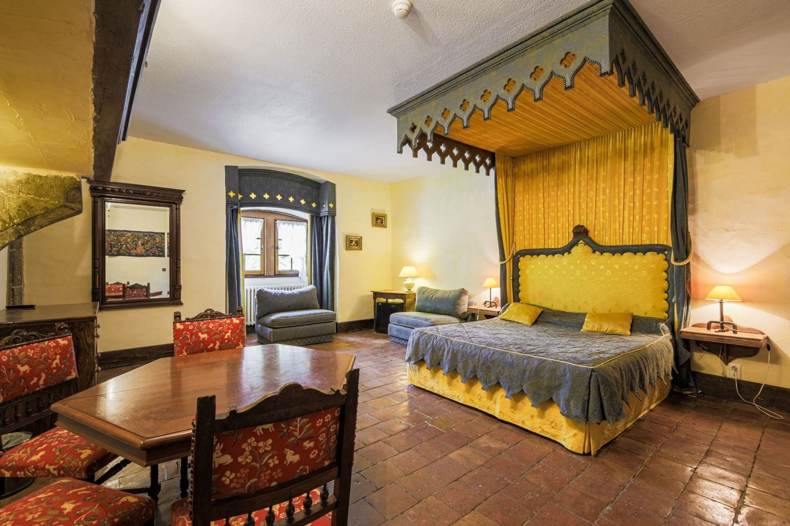
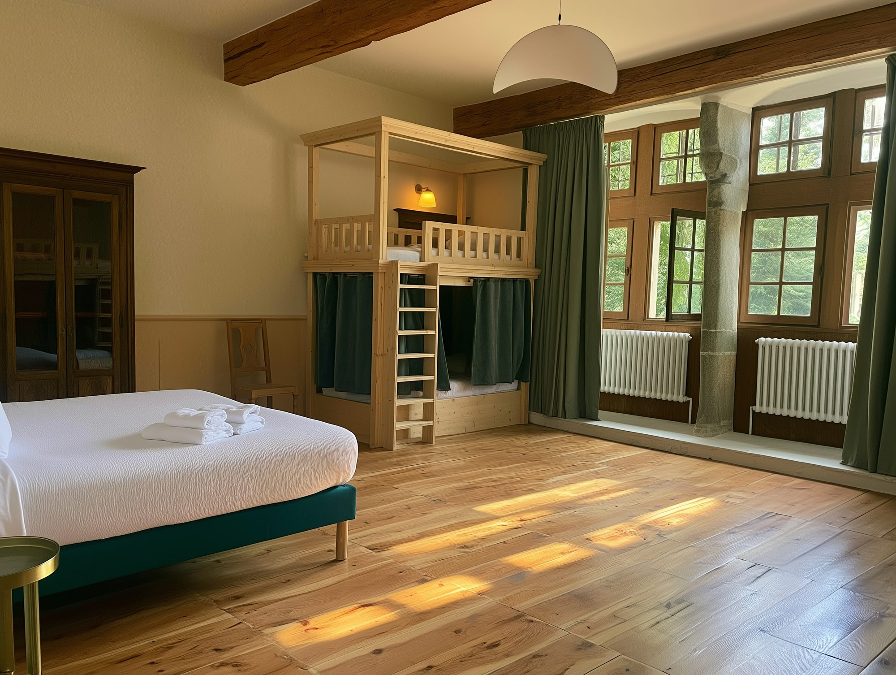

Le château, pièce par pièce.
Plus de 400 ans d’histoire, des caves voûtées, des salons aux plafonds à la française et un parc qui descend jusqu’au lac. Et des fauteuils où l’on a vraiment le droit de s’asseoir.
- 13chambres
- 10 à 100personnes
- 40 minde Grenoble

Quatre siècles, et un lac
Herbelon est né place forte, pendant les guerres de Religion. Le lac est arrivé bien plus tard, et a tout changé.
- XVIe sièclePendant les guerres de Religion, les catholiques tiennent la route du sud à travers le Trièves. Herbelon est l’une de leurs places fortes.
- 1603La famille Sarrazin, seigneurs de Treffort, fait construire le château.
- XVIIe et XVIIIe sièclesIl passe par héritage aux familles d’Armand puis Ravier. André Claude Ravier installe des tuileries à Treffort et représente la noblesse en 1788.
- 1962Le barrage de Monteynard noie la vallée du Drac. Le château se retrouve au-dessus d’un lac turquoise.
- Aujourd’huiSéminaires, mariages et retraites de septembre à juin ; hôtel, restaurant et guinguette l’été.
Les chambres
13 chambres, 39 couchages, et pas deux pareilles : lits à baldaquin sous les toits, mobilier ancien, vue sur le parc ou sur le lac. Chacune a sa salle de bain et accueille de deux à six personnes.
-

Marguerite
Chambre 1, 2e étageSous les toits, un coin salon et deux lucarnes.
-

Capucine
Chambre 2, 2e étageSous les toits, deux fauteuils devant la fenêtre et un lit de repos.
-

Iris
Chambre 3, 2e étageUn mur en galets, des bleus de lac, un coin salon et un bureau.
-

Cyprès de Lambert
Chambre 4, 2e étageSous les toits, un ciel de lit vert et or, un bureau ancien.
-

Valériane
Chambre 5, 2e étageDes murs rouge profond sous la pente du toit.
-

Camélia
Chambre 6, 2e étageUn ciel de lit rose et des coussins en toile de Jouy.
-

La suite Herbelon
Chambre 10, 1er étageUn lit à baldaquin, des tomettes anciennes et une table pour se retrouver.
-

Magnolia
Chambre 12, 1er étageUne chambre familiale, jusqu’à six personnes : des grands lits, des lits superposés à rideaux et une salle de bain à verrière.
Les 13 chambres en un coup d’œil
| Chambre | Personnes | Lits | Vue | Salle de bain |
|---|---|---|---|---|
| MargueriteChambre 1, 2e étage | 3 pers. | 3 lits de 90 | Parc | Baignoire |
| CapucineChambre 2, 2e étage | 3 pers. | 3 lits de 90 | Parc | Baignoire |
| IrisChambre 3, 2e étage | 2 pers. | 1 lit de 180 | Parc | Douche à l’italienne |
| Cyprès de LambertChambre 4, 2e étage | 2 pers. | 1 lit de 180 | Lac | Baignoire |
| ValérianeChambre 5, 2e étage | 2 pers. | 1 lit de 140 | Lac | Baignoire |
| CaméliaChambre 6, 2e étage | 2 pers. | 2 lits de 90 | Lac | Baignoire |
| GentianeChambre 7, 2e étage | 2 pers. | 2 lits de 80 | Cour | Baignoire |
| AlbiziaChambre 8, 2e étage | 2 pers. | 1 lit de 140 | Cour | Baignoire |
| DahliaChambre 9, 2e étage | 3 pers. | 3 lits de 90 | Cour | Baignoire |
| Suite HerbelonChambre 10, 1er étage | 4 pers. | 1 lit de 180 et 2 lits de 80, en deux pièces dont la tour | Cour | Douche et baignoire |
| TrèfleChambre 11, 1er étage | 4 pers. | 4 lits de 140, une grande chambre et quatre alcôves | Parc | Douche à l’italienne |
| MagnoliaChambre 12, 1er étage | 6 pers. | 2 lits de 140 et 4 lits de 90 | Parc | Douche à l’italienne |
| ÉglantineChambre 13, 1er étage | 4 pers. | 4 lits de 90, dont une mezzanine | Parc | Douche à l’italienne |
Le reste de l’année, les chambres sont comprises quand vous privatisez le château. Les prix des chambres en juillet et août sont sur la page L’été.
Les espaces
| Espace | Taille | On y fait quoi |
|---|---|---|
| Caves voûtées | 220 m² | Conférences, performances, soirées, temps forts collectifs |
| Trois salons | 60 m² chacun | Réunions, travail en groupe, repas près de la cheminée |
| Salle d’activité | 60 m² | Au premier étage. Yoga, méditation, ateliers, sous-groupes. Parquet ancien, vue sur le lac |
| Terrasse abritée | 40 places assises | Déjeuners et dîners face au lac |
| Parc arboré | 3 000 m² | Pauses, vin d’honneur, accès direct au lac |
| Chambres | 13 | Toutes différentes, chacune avec sa salle de bain |


Les petites choses, déjà prévues
- En libre-serviceCafé, thé et eau fraîche dans le salon de la cheminée.
- Des coins à vivreHamacs, transats, coin lecture, table de jeux.
- Pour votre matérielUn local au bord de l’eau pour planches, vélos et combinaisons.
- Dans chaque chambreLinge de lit et de toilette, produits d’accueil, wifi et chauffage. Ni télévision ni bouilloire : le café et le thé sont au salon.
- Arrivée et départArrivée à partir de 16 h, départ avant 11 h. Ménage tous les trois jours, ou plus souvent si vous le demandez.
- Pour tout le mondeChambres non-fumeur, animaux bienvenus, lit bébé offert.
Venir
1605 route d’Herbelon, 38650 Treffort
- En voiture40 minutes au sud de Grenoble. A51, sortie 13, puis direction lac de Monteynard / Treffort. Parking gratuit sur place.
- En trainGare de Monestier-de-Clermont, puis quelques minutes de taxi. Donnez-nous votre heure d’arrivée.

Infos pratiques
Le château est-il accessible en fauteuil roulant ?
Pas encore : aucune chambre ni aucun sanitaire n’est adapté aujourd’hui. Nous y travaillons ; appelez-nous pour en parler.
Y a-t-il un parking ?
Oui, environ 40 places gratuites sur place. Il n’y a pas de borne de recharge électrique.
Comment venir sans voiture ?
En train jusqu’à la gare de Monestier-de-Clermont, puis quelques minutes de taxi. Pour un groupe, nous pouvons nous renseigner sur un transfert.
Les animaux sont-ils acceptés ?
Oui, pour tous les séjours et les événements (12 € la nuit à l’hôtel en été).
Envie de voir le lieu ?
On vous fait visiter avec plaisir. Dites-nous quand vous passez.